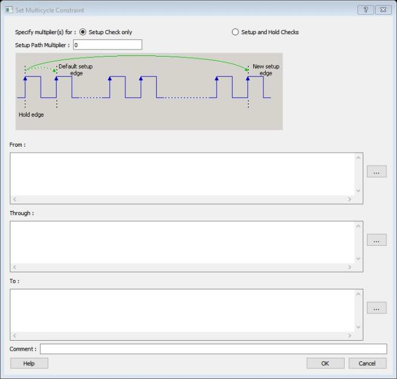
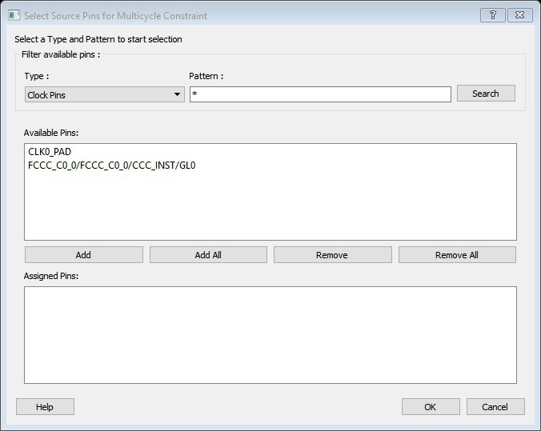
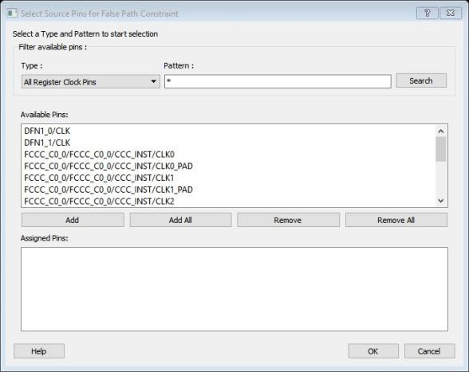

10.3 Timing Exceptions
(Ask a Question)Use timing exceptions to overwrite the default behavior of the design path. Timing exceptions includes the following:
- Setting multicycle constraint to specify paths that (by design) take more than one cycle.
- Setting a false path constraint to identify paths that must not be included in the timing analysis or the optimization flow.
- Setting a maximum/minimum delay constraint on specific paths to relax or to tighten the original clock constraint requirement.
10.3.1 Set a Maximum Delay Constraint
(Ask a Question)Set the options in the Maximum Delay Constraint dialog box to relax or to tighten the original clock constraint requirement on specific paths.
The Timing Constraints Editor automatically derives the individual maximum delay targets from clock waveforms and port input or output delays. So the maximum delay constraint is a timing exception. This constraint overrides the default single cycle timing relationship for one or more timing paths. This constraint also overrides a multiple cycle path constraint.
| Timing Exception Constraints | Order of Precedence |
|---|---|
| set_disable_timing | 1 |
| set_false_path | 2 |
| set_maximum_delay/set_minimum_delay | 3 |
| set_multicycle_path | 4 |
set_maximum_delay_constraint has a higher precedence over
set_multicycle_path constraint and therefore the former overrides
the latter when both constraints are set on the same timing path.To set a Maximum Delay constraint, open the Set Maximum Delay Constraint dialog box in one of the following four ways:
- In the Constraints Browser, double-click Max Delay.
- Click the Add Max Delay Constraint icon.
- From the Constraints menu, click Max Delay .
- In the Max Delay Constraints table, right-click any row and choose Add Maximum Delay Constraint. The Set Maximum Delay Constraint dialog box appears.
The following table describes the Set Maximum Delay Constraint dialog box options.
| Option | Description |
|---|---|
| Maximum delay | Specifies a floating point number in nanoseconds that represents the
required maximum delay value for specified paths.
|
| Source/From Pins | Specifies the starting points for max delay constraint path. A valid
timing starting point is a clock, a primary input, an inout port, or a
clock pin of a sequential cell. To specify the Source pins(s), click the Browse next to From to open the Select Source Pins for Max Delay Constraint dialog box. The
following options are available on the Select Source Pins
for Max Delay Constraint dialog box:
|
| Through Pins | Specifies the through pins in the specified path for the Maximum
Delay constraint. To specify the Through pin(s), click Browse next to Through textbox to open the Select Through Pins for Max Delay Constraint dialog box. The following options
are available on the Select Through Pins for Max Delay
Constraint dialog box:
|
| Destination/To Pins | Specifies the ending points for maximum delay constraint. A valid
timing ending point is a clock, a primary output, an inout port, or a
data pin of a sequential cell. To specify the destination pin(s), click Browse next to the To box to open the Select Destination Pins for Max Delay Constraint dialog box. The following options are available on the
Select Destination Pins for Max Delay
Constraint dialog box:
|
| Comment | Enter a one-line comment for the constraint. |
10.3.2 Set a Minimum Delay Constraint
(Ask a Question)Set the options in the Minimum Delay Constraint dialog box to relax or to tighten the original clock constraint requirement on specific paths.
The Timing Constraints Editor automatically derives the individual minimum delay targets from clock waveforms and port input or output delays. So the minimum delay constraint is a timing exception. This constraint overrides the default single cycle timing relationship for one or more timing paths. This constraint also overrides a multiple cycle path constraint.
| Timing Exception Constraints | Order of Precedence |
|---|---|
set_disable_timing |
1 |
set_false_path |
2 |
set_maximum_delay/set_minimum_delay |
3 |
set_multicycle_path |
4 |
set_minimum_delay_constraint has a higher precedence over
set_multicycle_path constraint and therefore the former overrides
the latter when both constraints are set on the same timing path.To set a Minimum Delay constraint, open the Set Minimum Delay Constraint dialog box in one of the following four ways:
- In the Constraints Browser, click Min Delay.
- Click the Add Min Delay
Constraint
 icon.
icon. - From the Constraints menu, click Min Delay.
- Right-click any row of Min Delay Constraints Table and click Add Minimum Delay Constraint. The Set Minimum Delay Constraint dialog box appears.
The following table describes the Set Minimum Delay Constraint dialog box options.
| Option | Description |
|---|---|
| Minimum delay | Specifies a floating point number in nanoseconds that represents the
required minimum delay value for specified paths.
|
| Source Pins/From |
Specifies the starting point for minimum delay constraint. A valid timing starting point is a clock, a primary input, an input port, or a clock pin of a sequential cell. To specify the source pins(s), click Browse next to the From box to open the Select Source Pins for Minimum Delay Constraint dialog box. The following options are available on the Select Source
Pins for Minimum Delay Constraint dialog box:
|
| Through Pins |
Specifies the through points for the Minimum Delay constraint. To specify the Through pin(s), click Browse next to the Through box to open the Select the Through Pins for Min Delay dialog box. The following options are available on the Select the
Through Pins for Min Delay dialog box:
|
| Destination/To Pins |
Specifies the ending points for minimum delay constraint. A valid timing ending point is a clock, a primary output, or a data pin of a sequential cell. To specify the Destination pin(s), click Browse next to the To box to open the Select the Destination Pins for Min Delay Constraint dialog box. The following options are available on the Select the
Destination Pins for Min Delay Constraint dialog
box:
|
| Comment | Enter a one-line comment for the Constraint. |
10.3.3 Set a Multicycle Path
(Ask a Question)Use this constraint to identify paths in the design that take multiple clock cycles.
You can set multicycle path constraints in an SDC file, which you can either create yourself or generate with Synthesis tools, and at the same time you can import the netlist.
You can use one or more of the following to set the multicycle paths constraints:
Families Supported
The following table lists the families which support this constraint and the file formats and tools which you can use to enter or modify it:
| Families | SDC | Constraints Editor |
|---|---|---|
| PolarFire® | X | X |
| RTG4™ | X | X |
| IGLOO® 2 | X | X |
| SmartFusion® 2 | X | X |
10.3.4 Set a Multicycle Constraint
(Ask a Question)Set the options in the Set Multicycle Constraint dialog box to specify paths that take multiple clock cycles in the current design.
Setting the multiple-cycle path constraint overrides the single-cycle timing relationships (default) between sequential elements by specifying the number of cycles (two or more) that the data path must have for setup or hold checks.
To set a multicycle constraint, open the Set Multicycle Constraint dialog box in one of the following four ways:
- In the Constraints Browser, double-click Multicycle.
- Click the Add Multicycle Constraint icon.
- From the Constraints menu, click Multicycle.
- Right-click any row of Multicycle Constraints Table and click Add Multicycle Path Constraint. The Set Multicycle Constraint dialog box appears.
The following table describes the Set Multicycle Constraint dialog box options.
| Option | Description |
|---|---|
| Setup Check Only | Select this check box to apply multiple clock cycle timing consideration for setup check only. |
| Setup and Hold Checks | Select this check box to apply multiple clock cycle timing consideration for both setup and hold checks. |
| Hold Path Multiplier | Specifies an integer value that represents the number by which the edge will move towards the left, or the edge number, where the check will be performed. |
| Setup Path Multiplier | Specifies an integer value that represents the number of clock cycles (more than one) the data path must have for a setup check. |
| Source Pins/From |
Specifies the starting points for the multiple cycle path. A valid starting point is a clock, a primary input, an inout port, or the clock pin of a sequential cell. To specify the source pins(s), click Browse next to the From box to open the Multicycle Constraint dialog box. The following options are available on the Multicycle
Constraint dialog box:
|
| Through Pins |
Specifies the through points for the multiple cycle path. To specify the through pin(s), click Browse next to the Through box to open the Select Through Pins for Multicycle Constraint dialog box. The following options are available on the Select Through
Pins for Multicycle Constraint dialog box:
|
| Destination/To Pins |
Specifies the ending points for multiple cycle path. To specify the destination pin(s), click Browse next to the To box to open the Select Destination Pins dialog box. The following options are available on the Select
Destination Pins dialog box:
|
| Comment | Enter a one-line comment for the constraint. |
10.3.4.1 Specifying a Multicycle Constraint
(Ask a Question)You set options in the Set Multicycle Constraint dialog box to specify paths that take multiple clock cycles in the current design.
To specify multicycle constraints:
- Add the constraint in the
Editable Constraints Grid or open the Set
Multicycle Constraint dialog box using one of the following methods:
- From the Constraints menu, click MultiCycle.
- Click the icon.
- In the Constraints Browser, double-click Multicycle.
- Right-click the
Multicycle option in the Constraint
Browser and click Add Multicycle Path
Constraint.
The Set Multicycle Constraint dialog box appears.
Figure 10-18. Set Multicycle Constraint Dialog Box 
- Specify the number of cycles in the Setup Path Multiplier.
- Specify the From
pin(s). Click Browse next to the From
box to open the Select Source Pins for Multicycle
Constraint dialog box.
Figure 10-19. Select Source Pins for Multicycle Constraint Dialog Box  - Use Filter available pins to narrow the pin list based on the selected Type and Pattern. In the Available Pins list, click the pin(s). You can select multiple pins in this window.
- Click Add or Add All to add the pins from the Available Pins list to the Assigned Pins list. Click Remove or Remove All to remove the pins from the Assigned Pins list.
- Click the pins from the Assigned Pins list and click OK. The Set Multicycle Constraint dialog box displays the updated From pin(s) list.
- Click the Browse button for Through and To and add the appropriate pins. The displayed list shows the pins reachable from the previously selected pin(s) list
- Enter comments in the Comment section.
- Click OK. The Timing Constraints Editor adds the multicycle constraints to the Constraints List.
10.3.5 Set a False Path
(Ask a Question)Use this constraint to identify paths in the design that should be disregarded during timing analysis and timing optimization.
By definition, false paths are paths that cannot be sensitized under any input vector pair. Therefore, including false paths in timing calculation may lead to unrealistic results. For accurate static timing analysis, it is important to identify the false paths.
You can set false paths constraints in an SDC file, which you can either create yourself or generate with Synthesis tools, at the same time you import the netlist.
You can use one or more of the following commands or GUI tools to set false paths:
Families Supported
The following table lists the families that support this constraint, the file formats, and tools you can use to enter or modify it.
| Families | SDC | Constraints Editor |
|---|---|---|
| PolarFire® | X | X |
| RTG4™ | X | X |
| IGLOO® 2 | X | X |
| SmartFusion® 2 | X | X |
10.3.6 Set a False Path Constraint
(Ask a Question)Set options in the Set False Path Constraint dialog box to define specific timing paths as false path.
This constraint removes timing requirements on these false paths so that they are not considered during the timing analysis. The path starting points are the input ports or register clock pins and path ending points are the register data pins or output ports. This constraint disables setup and hold checking for the specified paths.
| Timing Exception Constraints | Order of Precedence |
|---|---|
| set_disable_timing | 1 |
| set_false_path | 2 |
| set_maximum_delay/set_minimum_delay | 3 |
| set_multicycle_path | 4 |
set_false_path
constraint has the second highest precedence and always overrides the
set_multicycle_path constraints and
set_maximum/minimum_delay constraints.To set a false path constraint, open the Set False Path Constraint dialog box in one of the following four ways:
- From the Constraints Browser, double-click False Path.
- Click the Add False Path
Constraint
 icon.
icon. - From the Constraints menu, click False Path .
- Right-click any row of False Path Constraints Table and click Add False Path Constraint. The Set False Path Constraint dialog box appears.
The following table describes the Set False Path Constraint dialog box options.
| Option | Description |
|---|---|
| Source/From Pins | Specifies the starting point for false path constraint. To specify the source pins(s), click Browse next to the From box to open the Select Source Pins for False Path Constraint dialog box. The following options are available on the
Select Source Pins for False Path Constraint
dialog box:
|
| Through Pins |
Specifies the through points for the false path constraint. To specify the through pin(s), click on the Browse button next to Through textbox to open the Select the Through Pins for False Path Constraint dialog box. The following options are available on the Select the
Through Pins for False Path Constraint dialog
box:
|
| Destination/To Pins | Specifies the ending points for false path constraint. To specify the destination pin(s), click Browse next to the To box to open the Select the Destination Pins for False Path Constraint dialog box. The following options are available on the
Select the Destination Pins for False Path
Constraint dialog box:
|
| Comment | Enter a one-line comment for the Constraint. |
10.3.6.1 Specifying a False Path Constraint
(Ask a Question)You set options in the Set False Path Constraint dialog box to define specific timing paths as false.
To specify False Path constraints:
- Add the constraint in the Editable
Constraints Grid or open the Set False Path Constraint dialog box. You can do this
by using one of the following methods:
- From the Constraints menu, choose False Path.
- Click the
 icon.
icon. - From the Constraints Browser, double-click False Path.
- Right-click False
Path in the Constraint Browser and choose Add
False Path Constraint. The Set False Path
Constraint dialog box appears.
Figure 10-21. Set False Path Constraint Dialog Box
- Specify the From
pin(s). Click the Browse button next to
From to open the Select Source Pins for False
Path Constraint dialog box.
Figure 10-22. Select Source Pins for False Path Constraint Dialog Box  - Use Filter available pins to narrow the pin list based on the selected Type and Pattern. Select the pin(s) from the Available Pins list. You can select multiple pins in this window.
- Click Add or Add All to add the pins from the Available Pins list to the Assigned Pins list. Click Remove or Remove All to remove the pins from the Assigned Pins list.
- Select the pins from the Assigned Pins list and click OK. The Set False Path Constraint dialog box displays the updated From pin(s) list.
- Click the Browse button for Through and To and add the appropriate pin(s). The displayed list shows the pins reachable from the previously selected pin(s) list.
- Enter comments in the Comment section.
- Click
OK.
The False Path constraints are added to the Constraints List in the Timing Constraints Editor.